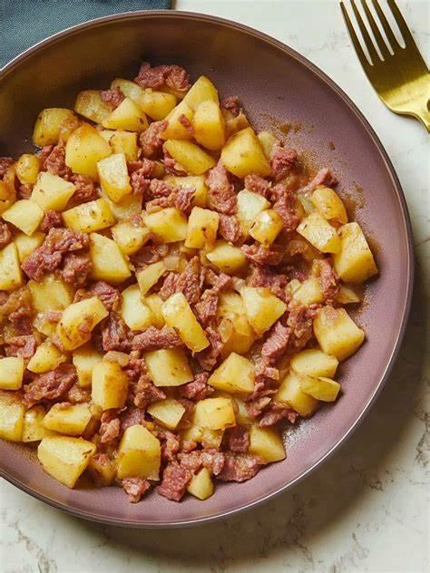

Leftover Corned Beef Hash

Description
So... it's the day after St. Patrick's and you're running a little short on time before
you have to go out for the day. Not to worry! Here's a recipe for leftover corned beef
hash that you can have ready in about half an hour and will fill up your belly at least
until lunch!
Ingredients
- 2 tablespoons vegetable oil
- 5 red potatoes, peeled and sliced 1/4 inch thick
- 1 pound cooked corned beef, sliced 1-inch thick
- salt and ground pepper to taste
- 2 eggs, or more to taste (Optional)
Steps
- Heat oil in a pan over medium-high heat until sizzling. Place potatoes in the oil and cook, turning every couple of minutes, until golden brown, about 10 minutes.
- Shred corned beef and toss into the pan. Cook until heated through, about 10 minutes. Season with salt and pepper and give a good stir. Crack eggs on top, sprinkle with more salt and pepper, and cover until eggs are set, 3 to 4 minutes.
Home